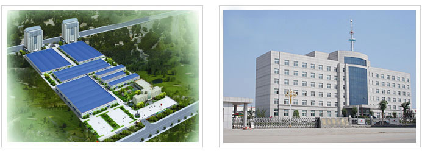

上海谷邦工程机械有限公司是一家以生产工业输送设备为主，集研发设计、加工制造、销售及售后服务为一体的工业输送机械专业制造商。公司现有员工400余人，中高级技术人员30多人，5万多平方米标准化厂房和现代化办公场地、研发中心及销售中心。公司多年来强化国内外先进技术的引进与消化吸收，倡导自主创新的发展理念，推广建立了全员管理的企业运作模式。凭借雄厚的技术实力、全面科学的管理体系和过硬的产品质量，上海谷邦工程机械有限公司迅速成长为中国工业输送设备重要的生产和出口基地。
上海谷邦工程机械有限公司销售网络遍及全国各地，并积极开拓国外市场，现主要输出方向有非洲、南美洲、中东和俄罗斯地区等。我们以诚信合作、优质服务为宗旨，贯之以优质的产品、合理的价格、高效的服务的经营理念，赢得了广泛客户的青睐和好评。

上海谷邦工程机械有限公司以工业输输送设备作为主导产品，拥有先进的技术和广阔的市场前景；
公司通过了ISO9001:2000质量管理体系认证，建立完善的管理制度；
质量是企业的生命，抓住质量源头，从采购环节抓配套产品的质量，在生产方面严格控制自制件质量和制作工艺，推行6S管理，技术部门从新产品开发和现有产品的升级换代方面做出了突出成绩，为生产高质量的产品提供了技术支持，不断提升员工的质量意识，从根本上树立了质量第一的观念，结合考核机制进行监督检查，实行质量一票否决制，保证了产品的耐久性、可靠性。
引进技术及加强技术合作与交流也给谷邦的发展奠定了基础，上海谷邦工程机械有限公司与多家机械研究所、211大学院校、机械行业协会等机构建立了紧密的合作关系，为谷邦的新产品研发提供了强大的技术支持。
信息化管理为企业管理规范化、专业化奠定了基础，在整体运营方面公司开发了专门的管理运作平台，从成本管理、核算的源头入手，理清产品工艺流程，通过设备和信息化投入建立公司产品常用配件列表，完备了产品工艺，为公司的全面质量管理和成本核算奠定了基础。